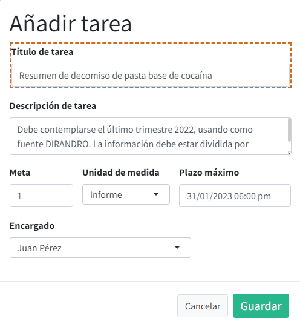
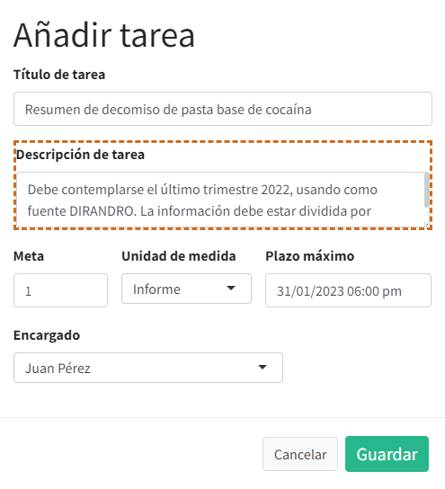
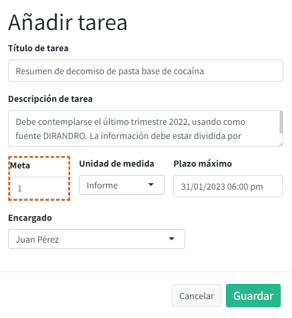
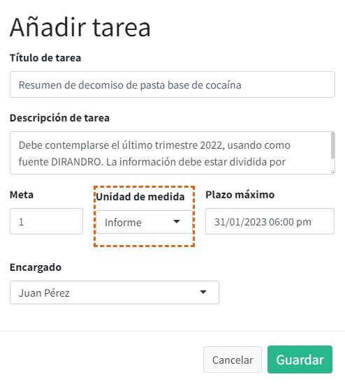
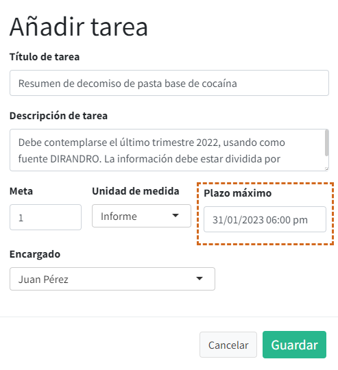
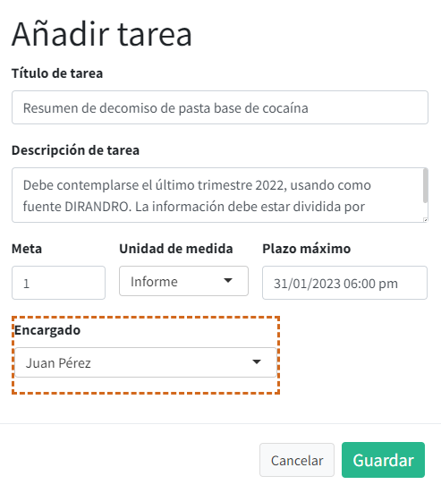
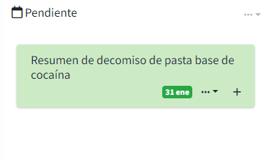
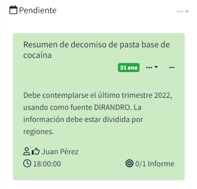
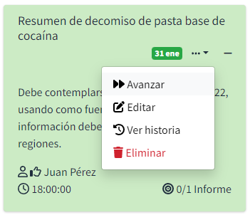
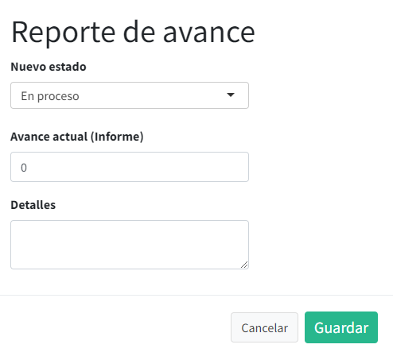

2 Gestión de tareas
2.1 Ciclo de vida
En el ciclo de vida de una tarea existen las siguientes fases:
- Pendiente
- En proceso
- Pausado
- En revisión
- Observado
- Terminado
En este capítulo se explica qué características tiene cada fase. Un adecuado conocimiento de este ciclo de vida permitirá a los usuarios generar información valiosa acerca de los tiempos necesarios para el cumplimiento de sus tareas.
2.1.1 Pendiente
Indica que la tarea no tiene ningún progreso. Se asigna automáticamente a tareas recién agregadas. En caso de que el usuario realice progreso en la tarea, debe avanzar su estado.
No hay un límite respecto al número de tareas que pueden tener este estado. Un gran acumulado en el número de pendientes podría significar que se asignan tareas sin tomar en cuenta la carga de trabajo del usuario. Por el contrario, la ausencia de tareas pendientes podría significar que no se aprovecha de manera adecuada el recurso humano.
2.1.2 En proceso
Indica que la tarea tiene algún tipo de progreso y el usuario está activamente trabajando para añadirle más progreso. En esta fase la tarea necesita aún avances significativos.
Idealmente, cualquier usuario debe tener siempre una tarea en este estado. Cuando una tarea “En proceso” cambia de estado, debe ser reemplazada por otra.
2.1.3 Pausado
Indica que la tarea tiene algún tipo de progreso pero el usuario NO está activamente trabajando para añadirle más progreso. Debe usarse cuando es necesario esperar trabajo de otras personas para progresar en la tarea o cuando una tarea más urgente es añadida, aplazando el cumplimiento de la actual.
No existe límite respecto al número de tareas que pueden tener este estado. Sin embargo, si las tareas pasan mucho tiempo en esta fase, podría significar que la tarea podría haber sido dividida en varias partes.
2.1.4 En revisión
Indica que la tarea tiene progreso suficiente como para ser considerada como terminada. El cambio de fase de la tarea se encuentra a manos del responsable de equipo.
Si la tarea:
- Está adecuadamente concluida, debe darse por “Terminada”
- Requiere cambios mínimos -típicamente de forma- para considerarse concluida, debe indicarse como “Observada”
- Requiere cambios sustanciales para considerarse concluida, debe indicarse como “En proceso”.
No existe límite respecto al número de tareas que pueden tener este estado. Sin embargo, si las tareas pasan mucho tiempo en esta fase, podría significar que el responsable de equipo no está revisando la finalización de las tareas bajo la lógica de la gestión de la información.
2.1.5 Observado
Indica que la tarea tiene progreso suficiente como para ser considerada como terminada pero necesita cambios mínimos antes de darla por finalizada. Generalmente estos cambios están referidos a correcciones de formato, ortografía, puntuación y otros relacionados. Una vez finalizada la corrección debe volver a reportarse como “En revisión”.
No existe límite respecto al número de tareas que pueden tener este estado. Si una misma tarea es observada múltiples veces significa que la retroalimentación por parte del responsable de equipo no está siendo consistente o que el usuario no está tomando en cuenta la retroalimentación en su totalidad.
2.1.6 Terminado
Indica que la tarea ha sido cumplida satisfactoriamente. Solo se puede avanzar a esta fase a través de un usuario responsable de equipo.
No existe límite respecto al número de tareas que pueden tener este estado. El tablero solo muestra las tareas que han sido concluidas en las últimas dos semanas.
2.2 Creación de nueva tarea
Para crear una nueva tarea, se debe hacer click en …
Nos aparecerá una ventana en la que podemos llenar información de la tarea. A continuación se explica el contenido de cada campo.
2.2.1 Título de tarea
El título de tarea es la información principal a visualizar. Brinda una idea general de la tarea que se busca completar. Al redactar el título debe buscarse mantenerlo corto pero lo suficientemente claro para no confundirlo con otras tareas.

2.2.2 Descripción de tarea
La descripción de tarea brinda mayor detalle acerca del contenido, metodología o fuentes a utilizar para completar la tarea. Dentro de este campo es posible explayarse para brindar mayor especificidad a la tarea.

2.2.3 Meta
La meta es un número que indica la cantidad de algo que se desea obtener como resultado de la tarea. Su existencia va de la mano con la unidad de medida. Dependiendo de lo que esté midiendo puede aceptar números decimales.

2.2.4 Unidad de medida
Es el resultado o producto medible que se espera obtener. Cuando su meta es uno (1) permite verificar si la tarea se cumplió o no. Cuando la meta es mayor a uno (1) puede permitir el seguimiento progresivo de la tarea.
Por defecto, se espera que las tareas produzcan un informe. Sin embargo, las opciones de unidad de medida disponibles deben ser personalizadas de acuerdo al trabajo que se realiza en el equipo.

2.2.5 Plazo máximo
Establece una fecha y hora límites para el cumplimiento de la tarea. Respecto a la hora límite, es posible escogerla en el rango de las 8:00 hasta las 18:45. Por defecto, el sistema establece el día siguiente a la fecha de creación de la tarea.

2.2.6 Encargado
Indica el nombre de la persona responsable del cumplimiento de la tarea. Un usuario básico solo puede escoger su nombre, pero un usuario responsable de equipo puede asignarle tareas a otras personas dentro de su equipo.

2.3 Gestión de progreso de tareas
Cada tarea asignada es convertida en una tarjeta dentro de la plataforma.
2.3.1 Tarjeta de tarea
Al iniciar la aplicación, todas las tarjetas inician en un estado cerrado, en la que solo es posible ver el título de la tarea y su fecha límite. Todas las tareas recién creadas aparecen en la columna de “Pendientes”.

El color de la etiqueta en la que aparece la fecha límite variará según qué tan cerca se esté de ella al momento de ver la tarjeta:
Verde: Hasta el día previo de la fecha límite
Amarillo: El día de fecha límite
Rojo: Desde un día después de la fecha límite
De esta manera se puede hacer un seguimiento rápido a las tareas que sean más urgentes.
Al hacer click en el botón + la tarjeta mostrará información extra de la tarea.

La información extra incluye la descripción, el nombre de la persona responsable, la hora límite, y el avance de acuerdo a la meta objetivo. Cuando la tarea fue asignada por otra persona, el símbolo de pulgar arriba indicará el nombre de la persona que asignó la tarea.
Al presionar sobre el símbolo de menú (…) se obtienen opciones de acción para la gestión de la tarea.

2.3.2 Avanzar
Permite avanzar en el ciclo de vida de la tarea. Inicialmente la tarea tiene un estado “Pendiente”, pero con esta opción podemos registrar algún tipo de progreso. Darle click en “Avanzar” abre una ventana que modifica el estado de la tarea.

Las opciones para elegir el nuevo estado de la tarea dependerán del estado actual de la tarea. Por ejemplo, desde “Pendiente” es posible indicar que la tarea está “En proceso” o “En revisión”.
El avance actual indica cuánto se ha avanzado de la meta, debe reportarse numéricamente. Se indica la unidad de medida como guía. No será posible indicar un numero de progreso mayor a la meta establecida.
Por último, el campo “Detalles” permite brindar información extra sobre el progreso reportado, como señalar coordinaciones, revisiones o cumplimientos parciales. Si está resultando difícil completar los plazos establecidos, pueden indicarse razones en esta celda.
Una vez guardado el progreso, la tarjeta de tarea aparecerá en la columna correspondiente al nuevo estado.
2.3.3 Editar
Permite cambiar el título o descripción de la tarea. Utilizarlo en caso de que la redacción de alguno de ellos ya no resulte satisfactoria.
2.3.4 Ver historia
Permite ver todos los reportes de progreso reportados en esta tarea. Indica la fecha y hora de reporte, persona que reportó, avance de la meta y el detalle indicado.
2.3.5 Eliminar
Permite eliminar la tarea seleccionada. Debe aplicarse solo en caso de errores diferentes a la redacción del título y descripción. Un cuadro de diálogo pedirá confirmación de esta acción.